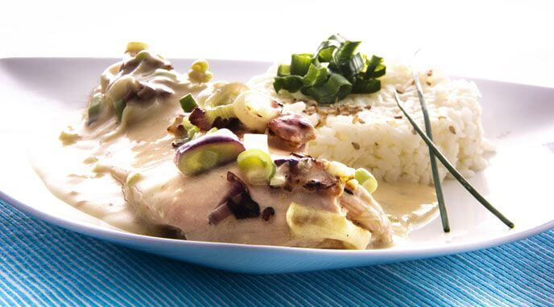

Pollo a la crema en 5 minutos
Si hay una carne que nos encanta preparar, esa es el pollo. Nos permite elaborar exquisitas recetas tan sugerentes como un rico pollo relleno de trufas, pincha aquí, o un fácil y rápido pollo asado con láminas de trufa en su interior, aquí puedes encontrar la receta paso a paso.
Siempre tienes que tener en cuenta su cocción para que el pollo te quede jugoso y rico y lo disfrutes junto a tu familia. Por ello, te sugerimos otra receta con pollo, en este caso, con un toque de ajo asado y crema fresca.
Podrás hacerlo con pechuga o utilizar los muslos. Saltea bien el pollo, ya que la sartén le aportará ese toque dorado tan único. Luego añade los ajos, ásalos bien y, por último, la crema de leche.
Dale el último toque al horno, así la salsa se reduce y conseguimos aumentar los sabores. Y, por último, la trufa de verano rallada, aunque también puedes utilizar trufa negra de invierno, para coronar esta receta.

Ingredientes
- 4 pechugas de pollo con piel
- 2 cucharadas de harina
- Chorreón de Brandy de Jerez, también puedes usar brandy con trufa
- 6 dientes de ajo
- ½ taza de caldo de pollo
- Jugo de Trufa
- Zumo de medio limón
- 400 ml de nata líquida
- 100 g de mantequilla
- Aceite de Oliva Trufado
- Perejil picado
- Sal y pimienta negra
Elaboración
Salpimentar las pechugas de pollo y rebozarlas en la harina.
En una sartén, derretir la mantequilla y añadir dos cucharadas soperas de aceite de oliva trufado. Una vez esté bien caliente, saltear el pollo por ambas caras hasta que esté bien dorado.
Añade un chorreón de brandy y deja reducir. Retira las pechugas y resérvalas en un plato.
Bajar el fuego y añadir los ajos sin pelar y machacados. Dorarlos a fuego lento para extraer todo su sabor. Añadir el caldo de pollo, dos cucharadas soperas de jugo de trufa, el zumo de limón y un toque de sal y pimienta.
Incorpora a la sartén las pechugas doradas y añade la nata líquida. Ralla un poco de trufa de verano. Dejar que se cocinen bien durante 8-10 minutos.
Dejar reducir la salsa e incorpora el perejil picado. Rectifica de sal y pimienta si es necesario. Terminar con la trufa de verano rallada.
Aqui les dejo un video con el procedimiento
¡Disfruten la receta!